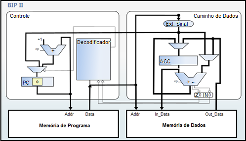

The BIP II consists of an extension of the BIP I, so it has the same architectural characteristics. Its specification was designed to include support for control structures, with such became possible to implement conditional branches, unconditional deviations and ties repetition support. With this instruction set was complemented by performing the addition of the Class of instructions comprising instructions for deviations of comparison, conditional branch instructions and unconditional jump instruction, described in the table below. Instructions BIP II inherited the format specified in the instructions I BIP. (MORANDI; RAABE; ZEFERINO, 2006).
To make it possible to carry out operations II added to the BIP adding a new recording was made also required. The recording in question is a status register, which has two flags, they are Z (Zero) and N (Negative). Every statement of comparison and conditional branch should be performed after a subtraction instruction and depending on the result of subtracting the flags are triggered. The flag values are verified by comparison statements and standard deviation to determine if the deviation should be performed or not, according to the type of comparison associated. (MORANDI; RAABE; ZEFERINO, 2006).
| Operation Code | Instruction | Operation | Class |
|---|---|---|---|
| 00000 - 00111 | Ift of instructions for BIP I. | ||
| 01000 | BEQ |
If (STATUS.Z=1) so PC ← (address) If not PC ← PC + 1 |
Conditional branch |
| 01001 | BNE |
If (STATUS.Z=0) so PC ← (address) If not PC ← PC + 1 |
Conditional branch |
| 01010 | BGT |
If (STATUS.Z=0) e (STATUS.N=0) so PC ← (address) If not PC ← PC + 1 |
Conditional branch |
| 01011 | BGE |
If (STATUS.N=0) so PC ← (address) If not PC ← PC + 1 |
Conditional branch |
| 01100 | BLT |
If (STATUS.N=1) so PC ← (address) If not PC ← PC + 1 |
Conditional branch |
| 01101 | BLE |
If (STATUS.Z=1) ou (STATUS.N=1) so PC ← (address) If not PC ← PC + 1 |
Conditional branch |
| 01110 | JMP |
PC ← (address) |
Unconditional branch |
| 01111 - 11111 | Reserved |
Source: Adapted from Morandi, Raabe e Zeferino (2006).
The organization of the BIP II, as well as the architecture is an extension of the BIP I, where we included the status register and made some modifications to update the PC circuit, as can be seen in the figure below. These changes have added an additional degree of complexity, however, still with an easy understanding. (MORANDI; RAABE; ZEFERINO, 2006).
Source: Vieira (2012).